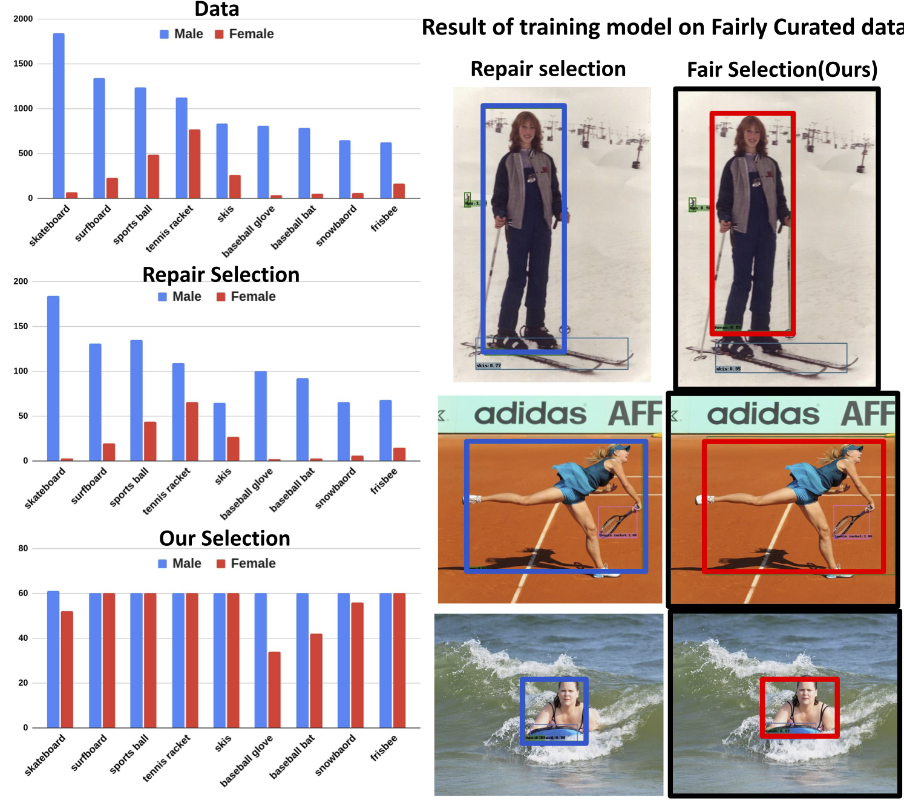
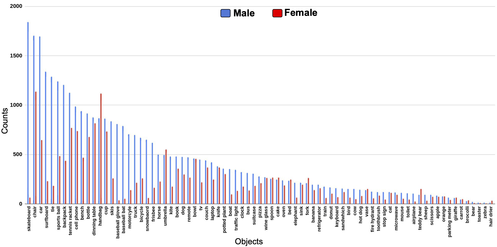
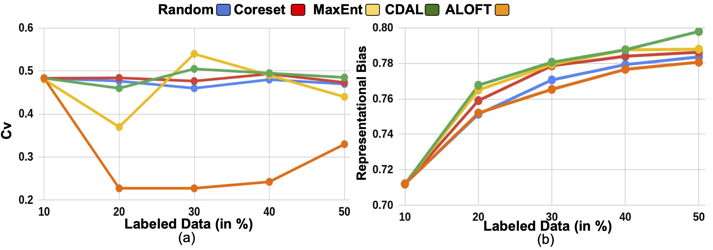
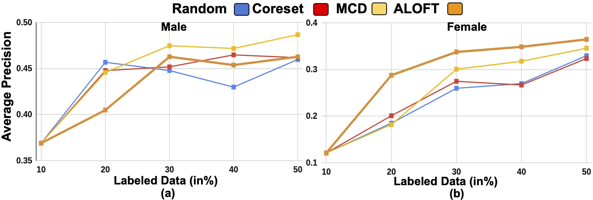

Does Data Repair Lead to Fair Models?
Curating Contextually Fair Data To Reduce Model Bias
Sharat Agarwal1* Sumanyu Muku2* Chetan Arora2 Saket Anand1
In IEEE Winter Conference on Applications of Computer Vision (WACV), 2022

Abstract
Contextual information is a valuable cue for Deep Neural Networks (DNNs) to learn better representations and improve accuracy.
However, co-occurrence bias in the training dataset may hamper a DNN model's generalizability to unseen scenarios in the real world. For example, in COCO, many object categories have a much higher co-occurrence with men compared to women, which can bias a DNN's prediction in favor of men.
Recent works have focused on task-specific training strategies to handle bias in such scenarios, but fixing the available data is often ignored. In this paper, we propose a novel and more generic solution to address the contextual bias in the datasets by selecting a subset of the samples,
which is fair in terms of the co-occurrence with various classes for a protected attribute.
We introduce a data repair algorithm using the coefficient of variation, which can curate fair and contextually balanced data for a protected class(es).
This helps in training a fair model irrespective of the task, architecture or training methodology. Our proposed solution is simple, effective and can even be used in an active learning setting where the data labels are not present or being generated incrementally.
We demonstrate the effectiveness of our algorithm for the task of object detection and multi-label image classification across different datasets.
Through a series of experiments, we validate that curating contextually fair data helps make model predictions fair by balancing the true positive rate for the protected class across groups without compromising on the model's overall performance.
Plots/Figures
COCO Object Co-occurence for Male Vs Female class.
|

|
COCO suffers from gender bias with its 79 object categories. We can see that males are biased in almost all the
categories by a significant margin as compared to females, thus this contextual bias is important to be fixed for real world application.
|
Active Learning Results
|

|
Comparison of ALOFT with other AL baselines. (a) Coefficient of variation for each selection,
lower the value fairer the selection
(b) Representational bias of the model.
|
|

|
Average precision of detecting (a) Male, (b) Female face in the presence of 39 different attributes, at different budgets in CelebA dataset.
AP of female has significantly improved compromising a bit in Male because of fair sampling.
|
Qualitative results
Detection of CUP class by different Active Learning techniques on Dollar Street and ObjectNet dataset.
Green box denotes predicted bounding box of CUP when model was trained using only 20% of training data.

|